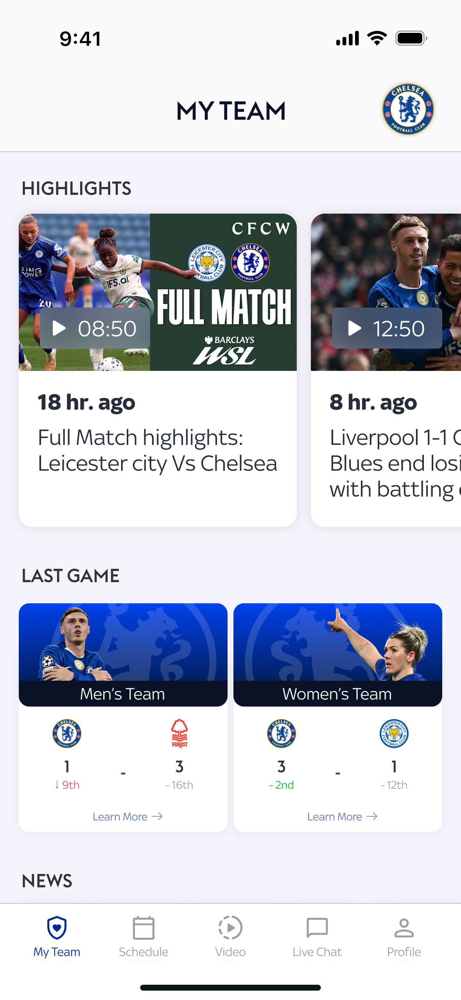

01
Equitable visibility for women’s football
The “My Team” and news views present men’s and women’s teams side by side, showing both results and upcoming fixtures in one place. This normalises women’s football as part of the same club ecosystem and encourages fans to engage with both.